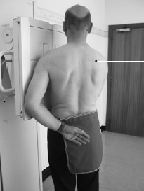

Sternoclavicular Joint(PA-Oblique)
Centering point:The horizontal central ray is centred at the level of the fourth
thoracic vertebra to a point 10 cm away from the midline on
the side away from the cassette.

Cassette Size:18 x 24cm (8 x 10ins)Landscape
Exposure Factors:66kVp on
20MaS
FFD:100cm
Bucky/Grid:Moving or Stationary Grid
Filter:No
Pathologies:Fracture
Position of patient and cassette
- The patient stands facing the Bucky.
- The patient is then rotated through 45 degrees so that the
median sagittal plane of the body is at 45 degrees to the
cassette with the sternoclavicular joint being examined
nearer the cassette and centred to it.
- The patient holds the vertical stand to help immobilization
and continues to breathe during the exposure.